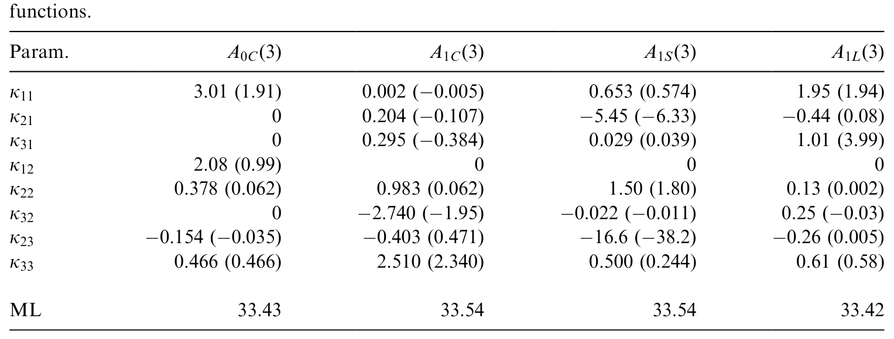
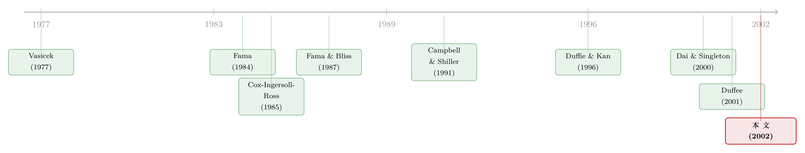

利率曲线给你的「预言」总是反的——一桩三十年的旧公案，与替它翻案的仿射模型
本文读的是 Dai & Singleton (2002, Journal of Financial Economics)：长期利率对收益率曲线斜率做回归，系数本该是 1，实际却是负的、而且越长越负——这被视作「预期假说」的滑铁卢。两位作者证明，这个看似反常的模式，恰恰能被一大类仿射期限结构模型 (affine term structure model) 在总体意义上「生」出来；而真正的胜负手，是允许风险的价格不只通过波动率、还直接由状态变量驱动。
1 一桩三十年的旧公案
先讲一个所有学利率的人都被它「噎」过一次的事实。
教科书里的预期假说 (expectations hypothesis) 说得很朴素：长期利率，无非是未来一连串短期利率的平均（再加一个不变的期限溢价）。如果这是真的，那么当今天的收益率曲线变陡——也就是长端利率 R^n_t 比短端 r_t 高出一截——市场就是在告诉你：未来短期利率要往上走，于是长债的收益率接下来应该上升、长债价格应该下跌。
把这个直觉写成一个回归，就是著名的 Campbell–Shiller 长端回归：
$$R^{n-1}_{t+1}-R^n_t=\text{const}+\phi_{nT}\,\frac{R^n_t-r_t}{n-1}+\text{residual}.$$
预期假说斩钉截铁地预言：在总体（population）里，斜率系数 \(\phi_n=1\)，对所有期限 \(n\) 都成立。
然后，数据笑了。
Dai 和 Singleton 用 Fama–Bliss 平滑后的美国国债数据（1970 年 2 月到 1995 年 12 月）把这条回归重做一遍，结果如下：3 个月期的系数是 -0.428，1 年期 -1.425，5 年期 -2.433，到了 10 年期（120 个月）已经是 -4.173。不仅是负的，而且期限越长，负得越离谱。
换句话说，曲线变陡时，长债收益率不但没像预期假说说的那样上升，反而平均而言下降了——而且越长的债，这个「反向」越夸张。市场给你的「预言」，几乎是系统性地反着来。
这就是所谓的预期之谜 (expectations puzzle)。Fama (1984a, 1984b) 和 Fama and Bliss (1987) 早就把它当成一组「程式化事实 (stylized facts)」抛给后人，等着动态期限结构模型来解释。三十年里，文献反复确认这个谜的顽固——Campbell and Shiller (1991) 在收益率上、Backus et al. (2001) 在远期利率上，都看到了同一张「时变风险溢价」的脸。
2 一个自然的问题：是不是模型太穷了？
接着，一个自然的问题是：这个谜，到底「谜」在哪里？
预期假说之所以预言 \(\phi_n=1\)，前提是风险溢价是常数。一旦风险溢价会随时间变化，且恰好和曲线斜率正相关，那么 \(\phi_n\) 偏离 1 就毫不奇怪了。这一点 Fama 当年就猜到了。
但真正悬而未决的，是一个更狠的问题：把这些历史模式放在一起，它们对那些学界和业界天天在用的、更丰富的动态期限结构模型 (dynamic term structure model, DTSM) 来说，到底还算不算一个谜？
Dai 和 Singleton 的答案是：不算。而且他们把「不算」这件事，拆成了两个互相独立、却必须同时满足的要求。他们给这组要求起了个名字叫 LPY（Linear Projections of Yields，收益率的线性投影）：
- LPY(i)：模型在总体意义上算出来的系数 \(\phi_n\)，要能复现表 1 里那条「越长越负」的下行曲线。这是说，模型在真实测度 P 下，把收益率的历史动态描述对了。
- LPY(ii)：把收益率变化做一次「风险溢价调整」之后，新的投影系数 \(\phi^R_n\) 应当回到
1。这是说，模型在用于定价的风险中性测度 Q 下，把动态也描述对了。
这两件事并不等价。LPY(i) 管的是真实世界里收益率怎么走，LPY(ii) 管的是定价（贴现）对不对。一个模型能同时过这两关，是一个强得多的筛子——这正是本文用来淘汰模型的利器。
3 识别这件事的「半张纸」：风险溢价调整投影
但真正关键的一步，在于一个几乎不含任何经济学、却极其好用的代数恒等式。
记 \(n\) 期债的一期超额收益为 \(D^n_{t+1}\equiv \ln(P^{n-1}_{t+1}/P^n_t)-r_t\)，其条件期望（即期望超额持有期收益）为 \(e^n_t\equiv E_t[D^n_{t+1}]\)。从最基本的价格—收益率关系出发，可以写出
$$e^n_t=-(n-1)\,E_t\!\left[R^{n-1}_{t+1}-R^n_t\right]+(R^n_t-r_t).\tag{1}$$
把它挪一下项，就得到全文的「地基」：
$$E_t\!\left[R^{n-1}_{t+1}-R^n_t+\frac{1}{n-1}D^n_{t+1}\right]=\frac{1}{n-1}(R^n_t-r_t).\tag{2}$$
注意：Eq. (2) 没有任何经济内容——它哪怕去掉期望算子都成立，纯粹是定义。经济学是后面才加进来的。
然后，把已实现超额收益 \(D^n_{t+1}\) 拆成一个「纯溢价」部分 \(D^{*n}_{t+1}\) 和一个「预期修正」部分：
$$D^n_{t+1}=D^{*n}_{t+1}+\sum_{i=1}^{n-1}\left(E_t r_{t+i}-E_{t+1}r_{t+i}\right),\tag{7}$$
其中
$$D^{*n}_{t+1}=-(n-1)(c^{n-1}_{t+1}-c^{n-1}_t)+p^{n-1}_t.\tag{8}$$
这里 \(c^n_t\) 是收益率期限溢价，\(p^n_t\) 是远期期限溢价（定义见原文 Eq. (4)–(5)）。妙处在于：括号里那串预期修正项的条件均值为零，所以条件期望超额收益只取决于纯溢价部分：
$$e^n_t=E_t[D^{*n}_{t+1}]=-(n-1)E_t[c^{n-1}_{t+1}-c^{n-1}_t]+p^{n-1}_t.\tag{9}$$
于是反转出现了。把 Eq. (2) 里的 \(D^n_{t+1}\) 换成 \(D^{*n}_{t+1}\)，得到
$$E_t\!\left[R^{n-1}_{t+1}-R^n_t+\frac{1}{n-1}D^{*n}_{t+1}\right]=\frac{1}{n-1}(R^n_t-r_t).\tag{11}$$
这就是 LPY(ii) 的来源：只要把收益率变化用模型算出的纯溢价 \(D^{*n}_{t+1}/(n-1)\) 修正一下，再投影到斜率 \((R^n_t-r_t)/(n-1)\) 上，系数就精确地等于 1。预期假说阵营梦寐以求的那个「1」，并没有消失，它只是被时变风险溢价挪走了；你把溢价还回去，它就回来。
这半张纸的漂亮之处在于：它把一个含糊的直觉——「考虑了风险溢价，斜率系数就该回到 1」——变成了一个精确的命题。剩下的全部工作，是问：一个具体的 DTSM 算出来的 \(D^{*n}_{t+1}\)，到底准不准。
4 模型：仿射世界里的风险价格
要回答「准不准」，就得把 \(c^n_t\)、\(p^n_t\) 这些溢价从一个真正的模型里算出来。这就轮到仿射模型 (affine DTSM) 登场了。
4.1 设定
设瞬时短期利率是状态向量 \(Y(t)\) 的仿射函数：
$$r(t)=a_0+b_0'\,Y(t),$$
而 \(N\) 维状态向量 \(Y(t)\) 在真实测度 \(P\) 下服从仿射扩散：
$$dY(t)=\kappa(\theta-Y(t))\,dt+\Sigma\sqrt{S(t)}\,dW(t),\tag{13}$$
其中 \(W(t)\) 是 \(N\) 维独立标准布朗运动，\(S(t)\) 是对角矩阵，第 \(i\) 个对角元为
$$[S(t)]_{ii}=\alpha_i+\beta_i'\,Y(t).\tag{14}$$
这套结构的好处是「闭合」：在仿射设定下，所有零息债价格都有解析形式 \(P^\tau_t=e^{-A(\tau)-B(\tau)'Y_t}\)，所有收益率、远期利率都是状态 \(Y_t\) 的仿射函数。
4.2 风险的价格——全文的心脏
用于定价的风险中性动态，是把 Eq. (13) 的漂移减去 \(\Sigma\sqrt{S(t)}\,\Lambda(t)\) 得到的，\(\Lambda(t)\) 就是市场风险价格 (market prices of risk) 向量。
标准的仿射模型（如 CIR 一系）把这个向量限定成「正比于波动率」：\(\Lambda(t)=\sqrt{S(t)}\,\lambda_0\)。本文真正的一招，是跟随 Duffee (2001)，把它扩展成下面这个形式——这也是整篇文章的心脏：
这里 \(\lambda_0\) 是 \(N\times1\) 向量，\(\lambda_Y\) 是 \(N\times N\) 常数矩阵，\(S^{-}(t)\) 是对角矩阵，前 \(m\) 个对角元为 \(0\)、其余为 \(1/(\alpha_i+\beta_i'Y(t))\)。\(\lambda_Y=0\) 就是老式设定。
为什么这一项如此致命？看瞬时期望超额收益：
$$\mu_e(\tau,t)=-B(\tau)'\,\Sigma\sqrt{S(t)}\,\Lambda(t).\tag{17}$$
\(\Lambda(t)\) 的具体形状，直接决定了 \(\mu_e\) 随时间怎么变，从而决定了模型能不能匹配 LPY。在老式设定里，\(\Lambda(t)\propto\sqrt{S(t)}\)，风险溢价只能通过波动率变化——而波动率（在仿射结构里）天生是「越高越往均值回」的正向过程，它撑不起那条「越长越负」的 \(\phi_n\) 曲线。加上 \(\lambda_Y\neq0\) 这一项，风险溢价就能直接随状态变量、甚至随曲线斜率自由地摆动。
4.3 一个被「可容许性」逼出来的取舍
但天下没有免费的午餐。这里有一个极漂亮的张力：波动率因子越多，风险价格的自由度就越小。
记 \(m\) 为驱动条件方差的状态变量个数，对应模型子族 \(A_m(N)\)。可容许性 (admissibility，即模型要能生成良好定义的债券价格）要求：
- \(m=N\)（CIR 式模型，所有因子都驱动波动率）：可容许性强制 \(\lambda_Y=0\)，风险溢价被锁死成「正比于波动率」。
- \(m=0\)（高斯模型，没有因子驱动波动率）：\(\lambda_Y\) 完全不受约束，风险价格的灵活性达到最大。
- \(0
于是一个先验的猜想浮出水面：高斯模型有最大的因子相关性和条件均值灵活度，应该最擅长匹配 LPY；而 CIR 式模型在风险价格和因子相关结构上最受束缚，可能表现最差。这个猜想，被接下来的实证狠狠地证实了。
5 三因子模型的「考场」
实证聚焦三因子模型——这有现实依据：Litterman and Scheinkman (1991) 发现，三个主成分就能解释美国国债收益率 90% 以上的变动（水平、斜率、曲率）。
数据：312 个月度观测，美国国债零息收益率，期限为 6 个月、2、3、5、7、10 年，样本期 1970–1995。6 个月、2 年、10 年三个期限假定无测量误差，其余期限的拟合误差是均值为零、独立同分布的正态噪声。这个设定逼着模型自己去捕捉收益率的全部可预测性，不许借测量误差「作弊」。
四个标准模型 \(A_0(3),A_1(3),A_2(3),A_3(3)\) 全部用全信息极大似然 (full-information ML) 估计，然后比较模型隐含的总体系数 \(\phi_n\)、\(\phi^R_n\) 与它们的样本对应值。
结论干净利落：
- 高斯模型 \(A_0(3)\)（\(m=0\)）匹配 LPY 出奇地好。 这一点很惊人——标准的高斯仿射模型（Vasicek, 1977）有常数风险价格，反而蕴含 \(\phi_n=1\)（即预期假说成立）。能成功的，必然是本文那个状态依赖的风险价格设定。
- CIR 式模型 \(A_3(3)\)（\(m=3\)）完全无法匹配 LPY。 因为它的风险溢价被钉死成正比于波动率，只能靠时变波动率来制造时变溢价，而这远远不够。这与 Roberds and Whiteman (1999) 的发现互补——他们证明一、二因子 CIR 模型连 LPY(i) 都匹配不了；也与 Backus et al. (2001) 互补——他们解析地证明，单因子 CIR 要想匹配 LPY(i)，就必须隐含一条与历史经验相反的、向下倾斜的平均远期利差期限结构。
- 中间情形 \(0

Table 3: for models A ð3Þ and A ð3Þ; where the actual and risk-neutral (in
如表 3 所示，对能匹配的模型，风险溢价调整后的样本系数 \(\phi^R_n\) 在统计上与 1 无法区分（LPY(ii) 通过），而未调整的总体系数 \(\phi_n\) 则复现了那条「越长越负」的下行曲线（LPY(i) 通过）。一正一负，两条线各归其位。
6 文献脉络
这条研究的来龙去脉，值得用一段话讲清楚。
源头是预期假说本身，以及 Vasicek (1977) 和 Cox, Ingersoll and Ross (1985) 两篇奠基性的均衡期限结构模型——前者给出高斯式、后者给出平方根（CIR）式的利率动态。紧接着是 Fama (1984a, 1984b) 和 Fama and Bliss (1987)，他们用远期利率和超额收益的回归，把「时变风险溢价」这组程式化事实摆上了桌面；Campbell and Shiller (1991) 则在收益率回归里把那条「越长越负」的曲线钉成了经典。

随后，Duffie and Kan (1996) 给出了仿射模型的一般刻画，Dai and Singleton (2000) 在此基础上做了系统的「可容许性」分类（即 \(A_m(N)\) 子族），为本文搭好了脚手架。真正点燃本文那一招的，是 Duffee (2001)：他提出把市场风险价格从「正比于波动率」扩展为「essentially affine」，让因子直接进入风险价格。本文（2002）把这块拼图嵌进 LPY 的框架，用全信息 ML 在三因子模型上做了一次正面的、量化的检验，并给出了那个干净的结论：高斯式赢，CIR 式输，胜负全在风险价格的自由度。
值得一提的是，Backus et al. (2001) 和 Bekaert et al. (1997a) 还顺手堵死了一条退路——他们证明 \(\phi_{nT}\) 的负值模式不能归因于小样本偏差；恰恰相反，小样本偏差会让样本系数更不负，反而强化了这个谜。所以本文要解释的，是一个真实的总体现象，而非统计幻觉。
（关于「定价」和「预测」为什么在期限结构模型里如此难以兼得，可参见《把利率曲线的「定价」和「预测」装进同一个模型，为什么这么难？》；关于在仿射模型里给风险价格「松绑」的另一种尝试，可参见《给「风险的价格」松一道绑》；至于通胀如何写歪整条曲线、又如何与预期假说纠缠，可参见《通胀这道暗税，如何写歪了整条利率曲线》。）
7 评论与延伸（Q&A + 研究方向）
(a) 几个可能的疑问
Q：模型能「生成」这个谜，是不是等于说预期假说被推翻了？
不完全是。本文证明的是：\(\phi_n\) 是负的、越长越负，这件事与一大类（并非全部）仿射模型相容，因此从「这是否反常」的角度看不再是谜。但 LPY(ii) 同时说明，把时变风险溢价精确还回去后，那个「1」依然在——所以预期假说的核心直觉（长率是未来短率的预期加溢价）并没有错，错的是「溢价不变」这个附加假设。
Q：LPY(i) 和 LPY(ii) 既然都来自同一套代数，为什么说它们「不等价」？
因为它们约束的是不同测度下的动态。LPY(i) 用总体 \(\phi_n\)（Eq. 18）刻画真实测度 \(P\) 下收益率怎么走；LPY(ii) 用风险调整后的 \(\phi^R_n\)（Eq. 19）刻画风险中性测度 \(Q\) 下的定价。一个模型可能把 \(P\) 下的均值匹配得很好，却把 \(Q\) 下的溢价动态搞错——于是 \(\phi_n\) 对了、\(\phi^R_n\) 偏离 1。要两关同过，是强得多的要求。
Q：为什么 CIR 式模型「输」得这么彻底？
因为可容许性把它的风险溢价锁成正比于因子波动率（\(\lambda_Y=0\)）。它唯一能让溢价时变的渠道是波动率本身的涨落，而仿射波动率过程的形状撑不起那条「越长越负」的曲线。换句话说，它的失败不是参数没调好，而是结构上就没有那个自由度。
Q：高斯模型没有随机波动率，凭什么反而赢？
关键不在波动率，而在风险价格。标准高斯模型（Vasicek）有常数风险价格，恰恰蕴含预期假说 \(\phi_n=1\)，根本生不出谜。本文的高斯模型之所以能匹配，是因为它用了状态依赖的风险价格 \(\lambda_Y\neq0\)——让斜率这类因子直接驱动溢价。是这个设定、而非随机波动率，在做功。
Q：会不会是测量误差或拟合收益率在「帮忙」？
作者刻意堵死了这条路。他们假定 6 个月、2 年、10 年三个期限无测量误差，且误差序列独立，从而逼模型自己捕捉全部可预测性。而且他们坚持匹配总体 \(\phi_n\)（而非用拟合收益率算出来的 \(\phi_n\)），后者是一个更苛刻的要求。
Q：这个谜会不会只是小样本偏差？
不是。Bekaert et al. (1997a) 和 Backus et al. (2001) 已证明，小样本偏差会让 \(\phi_{nT}\) 更不负，方向与谜相反，因此偏差只会强化而非制造这个谜。
(b) 几个可能的研究问题与提案
1. 把同一套 LPY 框架搬到公司债。 【经济故事】公司债的超额收益里既有利率风险溢价、也有信用风险溢价。如果对国债收益率做 Campbell–Shiller 回归会得到「越长越负」，那么对信用利差做同样的回归会得到什么？信用风险的时变溢价是否也能用一个「状态依赖风险价格」的仿射违约强度模型来匹配？ 【可行性】中。数据可用（TRACE 成交、Merrill/ICE 利差曲线），仿射违约强度模型也成熟；难点在于把流动性溢价从信用溢价里干净地剥出来，否则 LPY(ii) 的「调整」会混入噪声。
2. 外资持有结构与期限溢价的时变。 【经济故事】本文把时变风险溢价归因于状态依赖的风险价格，但「状态」是谁定的？如果一国国债的边际持有人结构在变（如外资占比上升），风险价格本身可能发生位移。能否把「外资持有份额」作为一个可观测状态变量，放进 \(\Lambda(t)\) 里检验它对 \(\phi_n\) 的解释力？ 【可行性】中偏低。需要高频的持有人结构数据（如 TIC、央行托管数据），且识别上要处理「外资流入」与「利率预期」的内生纠缠，可能需要一个外生的需求冲击（如指数纳入、储备再平衡）。
3. 风险中性 vs. 真实测度的「分裂」作为危机预警。 【经济故事】LPY(i) 管 \(P\)、LPY(ii) 管 \(Q\)。如果在某些时段模型只能过一关，是否意味着定价（\(Q\)）暂时脱离了真实动态（\(P\)）——即市场对风险的定价「失真」？这种分裂能否提前预警流动性危机？ 【可行性】高。在本文的估计框架上做滚动窗口，分别追踪 \(\phi_n\) 与 \(\phi^R_n\) 的样本偏离即可，数据和方法都现成；挑战在于把「统计偏离」与「经济意义上的失真」对应起来。
4. 货币政策反应函数与风险价格的同一性。 【经济故事】作者提到，他们的风险溢价形式与货币当局设定政策时用的利率反馈规则相容。能否把一个显式的 Taylor 规则嵌进仿射模型，检验「政策规则的参数变化」是否就是 \(\lambda_Y\) 变化的微观来源？ 【可行性】中。理论上可做（宏观-金融仿射模型已有不少），识别上需要政策规则的结构性断点（如 Volcker、危机后 ZLB），样本跨度要足够长。
8 我的判断
这是一篇「以退为进」的论文。它没有去发明一个更花哨的模型来「打败」预期之谜，而是反过来证明：那个让无数人困惑的负系数，其实是一大类标准模型的自然产物——只要你给风险的价格松对了那一道绑。把含糊的「考虑风险溢价就能恢复 1」这句话，提炼成 LPY(i)/LPY(ii) 这一对可检验、且互相独立的命题，是本文最干净利落的贡献；而「波动率自由度与风险价格自由度此消彼长」这个张力，则是它留给后续整个仿射文献的一份遗产。
对识别，我有两点保留。其一，结论高度依赖模型设定与估计准则——作者自己也坦承，哪一关（LPY(i) 还是 LPY(ii)）被匹配上，部分取决于 ML 估计时哪些矩被拟合得好。换言之，这更接近「模型相容性」的证据，而非「模型为真」的证据。其二，全文是总体层面的论断，用一段 1970–1995、单一国家、单一资产类别的样本去支撑，外部有效性需要谨慎——尤其是 2008 年后利率触及零下界、量化宽松大举改变持有人结构之后，那条「越长越负」的曲线是否还稳定，本身就是一个值得重做的问题。
后续我最想看到的，是把这套 \(P\)/\(Q\) 双测度的检验，从国债搬到信用市场和有外资深度参与的主权债市场，看看「状态依赖的风险价格」这把钥匙，能不能打开另外几扇门。
参考文献
Backus, D., Foresi, S., Mozumdar, A., Wu, L. (2001). Predictable changes in yields and forward rates. Journal of Financial Economics 59(3), 281–311.
Bekaert, G., Hodrick, R., Marshall, D. (1997a). On biases in tests of the expectations hypothesis of the term structure of interest rates. Journal of Financial Economics 44, 309–348.
Campbell, J.Y., Shiller, R.J. (1991). Yield spreads and interest rate movements: A bird's eye view. Review of Economic Studies 58, 495–514.
Cox, J.C., Ingersoll, J.E., Ross, S.A. (1985). A theory of the term structure of interest rates. Econometrica 53, 385–408.
Dai, Q., Singleton, K. (2000). Specification analysis of affine term structure models. Journal of Finance 55(5), 1943–1978.
Duffee, G.R. (2001). Term premia and interest rate forecasts in affine models. Working paper, University of California, Berkeley.
Duffie, D., Kan, R. (1996). A yield-factor model of interest rates. Mathematical Finance 6, 379–406.
Fama, E. (1984a). The information in the term structure. Journal of Financial Economics 13, 509–528.
Fama, E. (1984b). Term premiums in bond returns. Journal of Financial Economics 13, 529–546.
Fama, E.F., Bliss, R.R. (1987). The information in long-maturity forward rates. American Economic Review 77(4), 680–692.
Litterman, R., Scheinkman, J. (1991). Common factors affecting bond returns. Journal of Fixed Income 1, 54–61.
Roberds, W., Whiteman, C. (1999). Endogenous term premia and anomalies in the term structure of interest rates: Explaining the predictability smile. Journal of Monetary Economics 44, 555–580.
Vasicek, O. (1977). An equilibrium characterization of the term structure. Journal of Financial Economics 5, 177–188.